Classify3D
3D Point Cloud Image Segmentation and Classification
Consulting project for the Insight Data Science Program, 2019, Seattle
Dong Zhang, Data Scientist
◆ Introduction
Energy industry spends tens of billions of dollars on asset inspection and maintenance every year. What they are doing now is to use robotic systems such as drones to capture 2D pictures of their assets, and integrate them into 3D images using photogrammetry algorithms for inspection (see this interesting video for more details).
In order to better understand the state and features of various asset components such as pipes, valves, tanks and so on, it is very important to do 3D image segmentation and classification. A big issue now is that the process involved in classifying the image down to components is mostly manual (by hand), which is really time-consuming. In order to perform real-time inspection using 3D images, a technique of automatically recognize objects rather than manual work is necessary.
My project is to create a tool to automatically segment, cluster and classify objects in 3D images using unsupervised machine learning tools such as DBSCAN, GaussianMixture, and computer vision tool such as openCV. My tool may not only benefit energy industry companies and asset owners, but potentially also all 3D computer vision-related industry in the future.
◆ Data Preparation
The raw data is from a startup company Hybird Tech, which has taken large volumes of photos by drones and generate 3D point cloud images of water treatment plants and pipes. Each 3D image is 2-10 GB with 50-100 million point datasets, and each point includes (x,y,z) coordinates, RGB information and other dimensions. Point cloud data can be opened by Global Mapper, or CloudCompare . I took snapshot of two images.
This gives you a basic idea what the 3D point cloud image looks like:
and the following images are snapshots of the original 3D images.
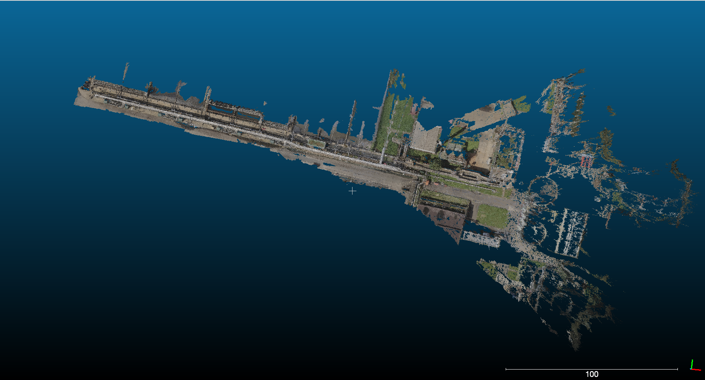 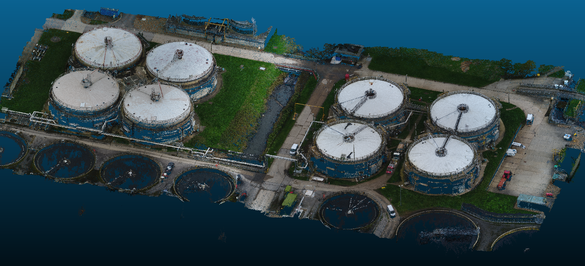
In order to use the data efficiently, I zoomed in the original image to select a small "local" part for processing. A typical "local" 3D data has 1-2 million points. The following figure shows the zoom-in selection using CloudCompare.
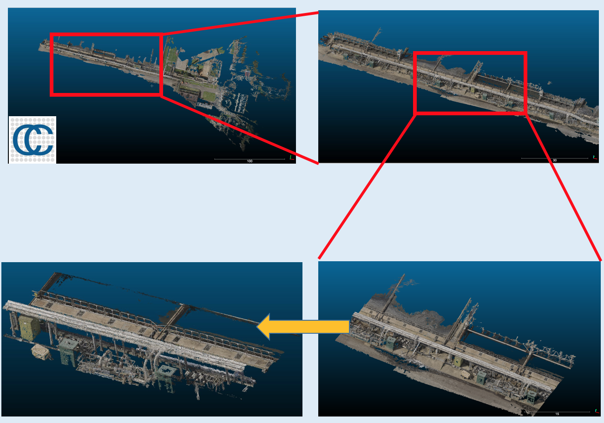
Then the data can be read by Python. To prepare for machine learning and computer vision algorithms, I have to take off the ground points, since the objects I am interested now are pipes, I do not need to worry about ground points. (However, for 3D tank finder tool ground points may matter, which need to further discussed in the future.)
◆ Step I: Image Segmentation
Or we can say "image segmentation" as "object clustering", a more machine learning term. Python can read point cloud files in las format, thanks to the laspy package. The point set is not labeled, so we cannot use any pre-trained model and supervised machine learning techniques to classify these points. More sophisticated unsupervised machine learning techniques should be used for clustering. I found that DBSCAN is the best tool to cluster a set of un-labeled points with unknown number of subsets. It is a density-based clustering non-parametric algorithm. The following figure shows how a point set are segmented into a number of sub-sets. Actually DBSCAN clustered the left panel to hundreds of clusters with hundreds/thousands noise points. I removed all noise points and only selected several top clusters with most points. Note that each (fake) color stands for one subset of points.
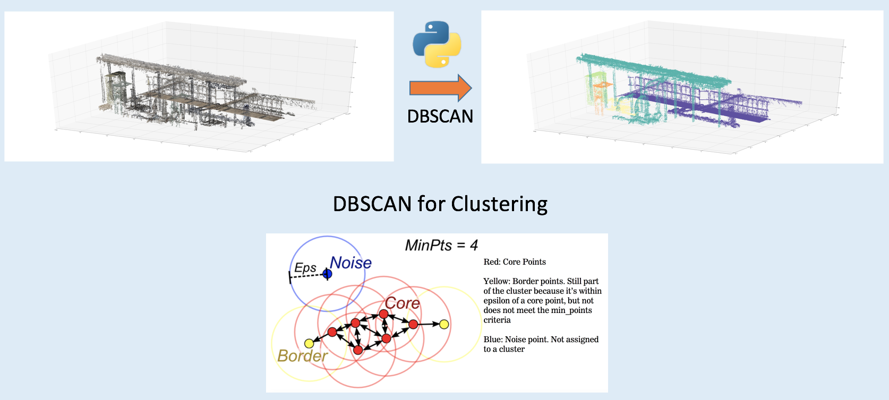
◆ Step II: 3D Object Classification
We consider each subset of points as one object. For example, we can identify some objects in above figure "by eye". The light blue object is a pipe candidate, the purple one is a fence-like object, and green and orange ones are more like small boxes. The issue is that, how can we identify them by computer, and select the pipe candidate automatically?
3D image classification can be really complicated and difficult. The good thing is that, for pipe and tank identification the problem can be simplified. I can use some traditional computer vision techniques to check image similarity. A best tool is called ORB (oriented FAST and rotated BRIEF), which is a fast robust local feature detector in computer vision (more details). OpenCV has the ORB library (here) to study image similarity.
In order to use ORB algorithm, I need to do two things. First, I need to have a pre-trained point set, which has been identified as a pipe or a tank. This is easy, since I have cut the original big 3D images to a number of "local" images, I can use DBSCAN to segment objects in these local images, and select a pipe among them by hand, and labeled it as a benchmark for comparison. The second thing is to do projection. Yes, I need to project all objects to 2D images, and use ORB to find the 2D projections which are most likely to be pipes. Taking the clustered 3D image above as an example, now I project all these objects to three plans (xy,yz and xz planes) as follows:
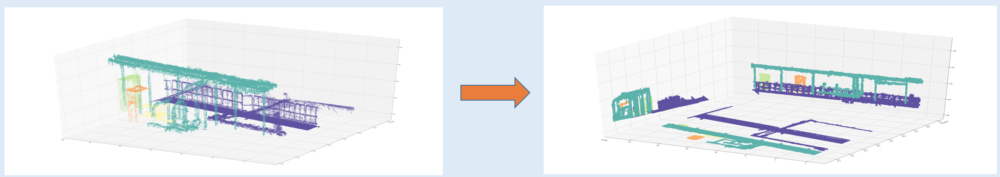
Now I can collect a number of 2D images, which belong to a variety of 3D objects. These 2D images can be compared to the 2D projection of a pre-labeled pipe using ORB, and the projection of pipe candidates can be selected among 2D images. As the instruction figures shown below, the cycled ones belong to xy and yz plane-projection of a pipe candidate.
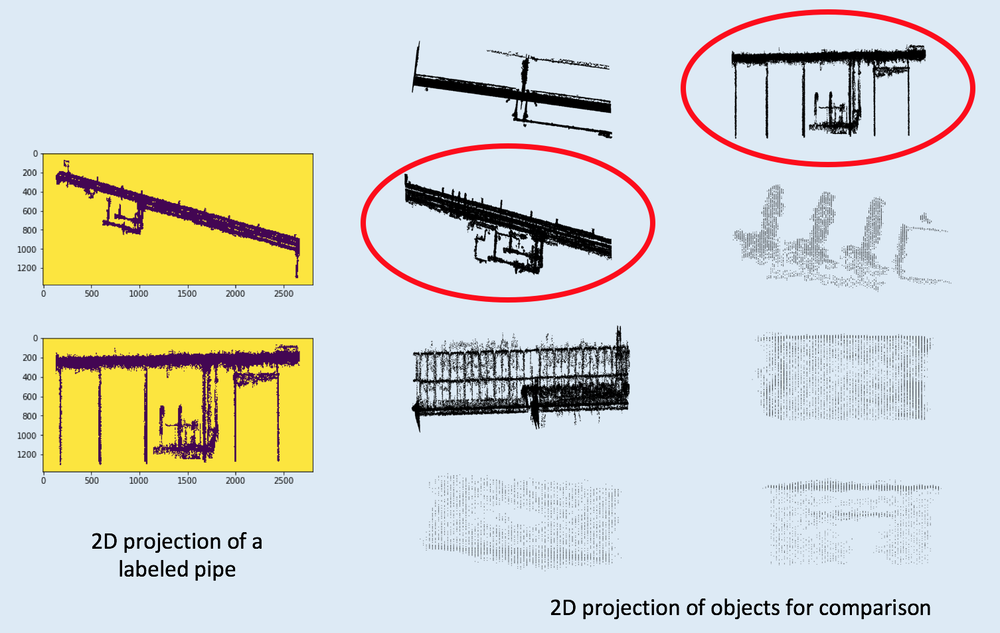
Now I can pick up the pipe candidate, and go back to plot its 3D shape. The following figure is a short summary. First I pre-processed the raw data by selecting a small region which I call a "local" 3D image so I can perform my algorithms smoothly in these smaller 3D images using my local computer. Then I read these las format point cloud images into python, and took off ground points. The next step is image segmentation, I used a clustering tool called DBSCAN to segmented unlabeled points, and cluster 3D images to a large number of objects. Then top objects were collected to go through the next step: object classification. 2D Image similarity algorithm ORB was used to select pipes, and the algorithm has been implemented in openCV as a tool.
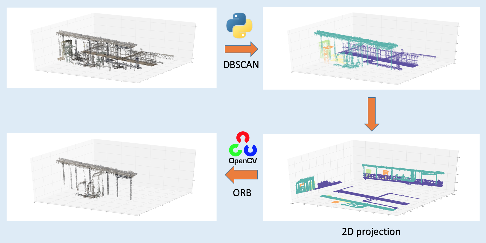
◆ Step III: Validation
Standard validation processes such as F1-score, precision and recall are not available for this problem, because we do not have pre-trained model and labeled data. A straightforward way to validate my tool is to ask, can my tool -- the 3D pipe finder algorithm really find pipes automatically? In order to check that, I collected tens of 3D images which include pipes and other objects, in which six examples are shown below. Using my pipe finder, I can really select pipes automatically.
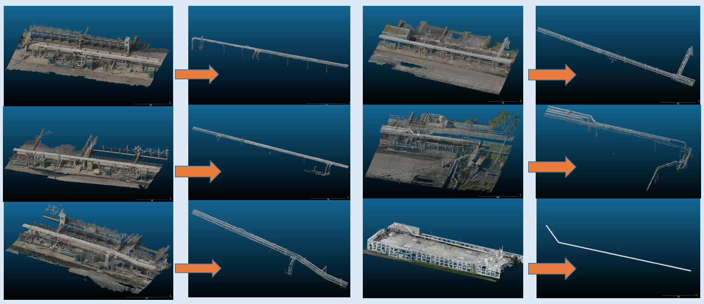
I also introduced another more quantitative way to check my pipe finder quality. Given a local 3D image, I first used CloudCompare to label the pipe in the image by hand, then I used my tool to automatically select the pipe in the image. Now I check the overlapping between them, and score the overlapping quality. The results are shown in the following figure. The first row shows pipes found by my tool from four images respectively, the second row gives the manually labeled pipes by CloudCompare, and in the third row shows overlapping between them. The overlapping can be scored by (point clouds which belong to both of them)/(total number of point clouds of the labeled pipe). The scores are pretty good, most of them are above 95%.
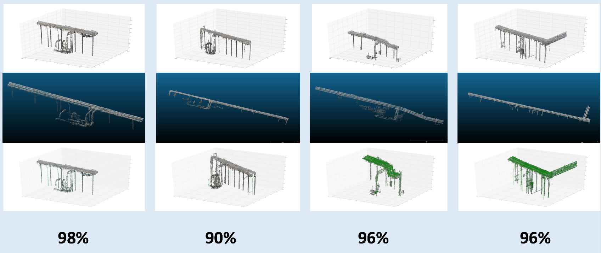
◆ The Tank Finder
I used very similar method to find tanks in 3D cloud point images. The original 3D image is for a water treatment plants taken by a startup company. The first step is to read part of the image into python, and data segmentation and classification started from the python-read image. Then I used DBSCAN to cluster objects, and select top/major objects for identification. The projections of these objects give us a hint to find tanks: they should be cycle-like. The following figure shows the pipeline to segment image and find tanks.
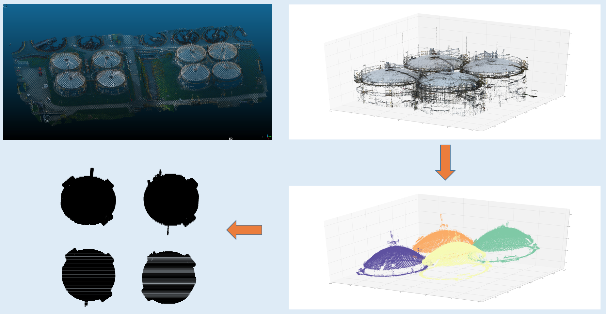
If the 2D projection of a object is cycle like, then I say that it is a tank candidate. The tanks I identified in the original 3D image is:
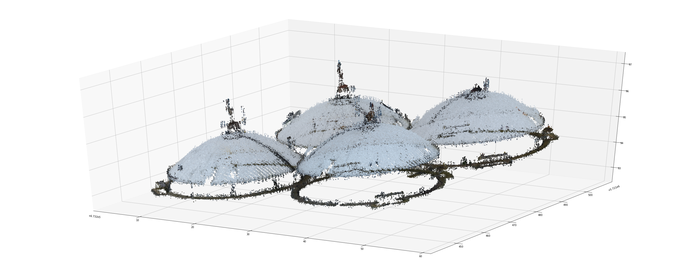
◆ Summary
The code can be found on my github with a detailed "Readme" to introduce how to use my tool.
This is Demo of my tool (3D pipe finder)
Using my tool described above, I help energy industry companies to better use their 3D images. In particular, currently 3D asset component segmentation and labeling are pretty time-consuming. For example, for a 3D image of water treatment factory with 50 million points, it takes a person 3-4 hours to label pipes in the image. My tool can provide an automatic way to select pipes, and tanks. Potentially this technique may not only be implemented to do real-time inspection for energy assets, but for all 3D computer-vision-related industry.